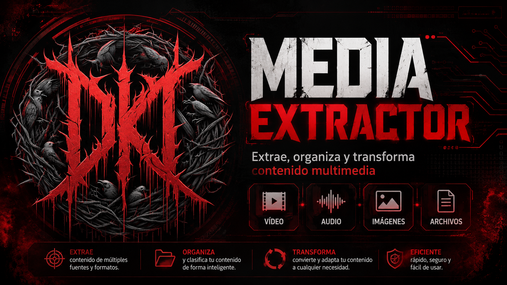

Descarga MP4
Guarda contenido compatible en formato de video y selecciona la calidad.
Aplicación local para Windows
Media Extractor DKTService es una herramienta local para Windows diseñada para analizar enlaces compatibles, convertir contenido a MP4 o MP3, elegir la calidad y guardar el archivo directamente en tu computadora.

Presentación
Esta página web presenta y documenta el proyecto. La descarga multimedia no se ejecuta en Vercel. La aplicación funcional debe instalarse localmente y utilizar Python, Flask, yt-dlp y FFmpeg.
El uso debe limitarse a contenido propio o autorizado, respetando las políticas de cada plataforma.
Funciones principales
Guarda contenido compatible en formato de video y selecciona la calidad.
Extrae audio mediante FFmpeg y guárdalo directamente en tu equipo.
Consulta información útil del enlace antes de iniciar la descarga.
Visualiza autor, título, duración y miniatura del contenido identificado.
Elige calidad máxima, 1080p, 720p, 360p o calidad mínima.
Define la ubicación donde se almacenarán tus archivos descargados.
La aplicación funciona en tu equipo sin depender de un backend externo.
Mantén los extractores actualizados ante cambios de las plataformas.
La versión local puede usar una sesión del navegador cuando sea necesario.
Plataformas compatibles
Video y audio desde enlaces compatibles.
Contenido público y enlaces compartidos compatibles.
Reels y publicaciones que la herramienta pueda resolver.
Videos compatibles según la disponibilidad del extractor.
Tecnologías
Requisitos
La aplicación funcional se ejecuta en el equipo del usuario. FFmpeg debe instalarse por separado y añadirse al PATH.
Instalación
git clone https://github.com/tore234/media-extractor-dktservice.git
cd media-extractor-dktservice
python -m venv .venv
.venv\Scripts\Activate.ps1
python -m pip install --upgrade pip
python -m pip install -r requirements.txt
python app.py
http://127.0.0.1:5000
FFmpeg debe instalarse por separado y estar disponible en el PATH.
Preguntas frecuentes
No. Esta landing page es estática y solo presenta el proyecto. Las descargas reales se realizan desde la aplicación local.
No. La página funciona sin backend y puede desplegarse en Vercel como un sitio estático.
La aplicación puede no convertir audio ni combinar ciertos formatos. FFmpeg debe instalarse y agregarse al PATH.
No. Los archivos se guardan localmente en la carpeta seleccionada por el usuario.
Uso responsable
Media Extractor DKTService está pensado para uso local, educativo y responsable. Respeta las políticas de cada plataforma y la legislación aplicable.